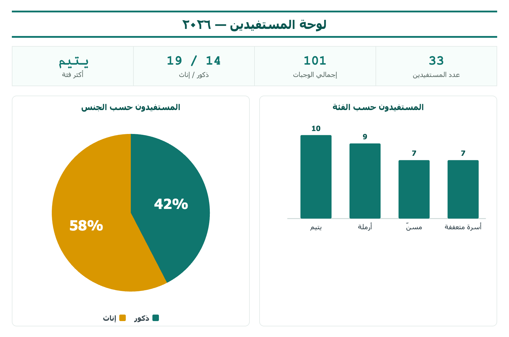

سجلّ المستفيدين — من غير مرتّب إلى لوحة جميلة
🗺️ خريطة الحقيبة — مرحلتان
المسافات · سنة التسجيل · فصل الفئة · توحيد الجوال · بطاقة المستفيد · رابط واتساب
حوّله جدولاً · تقرير الفئات · لوحة (بطاقات + مخططات)
📌 الفكرة: سجلّ مستفيدي الجمعية كثير ما يجيك غير مرتّب: مسافات في الأسماء، الفئة وعدد الوجبات في خانة وحدة، أرقام جوال بصيغ مختلفة، صفوف مكرّرة. هنا نرتّبه خطوة خطوة بدوال النص، ونطلّع منه لوحة مستفيدين أنيقة، وحتى زرّ واتساب نراسل فيه المستفيد بضغطة.
👋 قبل ما تبدأ
في عملنا بالجمعية، سجلّ المستفيدين كثير ما يجيك غير مرتّب: أسماء فيها مسافات زائدة، خانة وحدة فيها «الفئة وعدد الوجبات» مع بعض، أرقام جوال بصيغ مختلفة، وصفوف مكرّرة. لو حلّلناه وهو كذا تطلع نتائج غلط. لهذا أول مهارة: نرتّب السجلّ. في هذي الحقيبة نرتّبه خطوة خطوة، ونطلّع منه لوحة مستفيدين جميلة، وزرّ واتساب نراسل فيه المستفيد.
- نزّل «ملف التمرين» من الأعلى وافتحه، وروح لورقة «السجلّ».
- طبّق المحطات بالترتيب على الملف، محطة محطة.
- أرقامك وخطواتك راح تطابق المعروض في الحقيبة بالضبط.
⬇️ كيف تنزّل ملف التمرين؟
خطوة بخطوة — هي بدايتك:
- فوق هذي الصفحة، اضغط زر «نزّل ملف التمرين» — راح ينزّل ملف Excel على جهازك.
- على الكمبيوتر: افتح مجلّد «التنزيلات»، ثم افتح الملف بنقرة مزدوجة.
- على الجوال: بعد ما ينزّل، اضغط عليه ← «فتح بـ» ← تطبيق Excel (نزّله مجاناً لو ما هو مثبّت).
- داخل الملف، اضغط ورقة «السجلّ» من الألسنة تحت — هذي بياناتنا اللي راح نرتّبها.
🎯 ماذا ستبني؟
راح تأخذ سجلّاً غير مرتّب، وتطلّع منه في النهاية سجلّاً نظيفاً فيه زرّ واتساب لكل مستفيد + لوحة مستفيدين فيها بطاقات ومخططات. هذي وجهتك:

هذي عيّنة من سجلّ المستفيدين. لاحظ المشاكل الملوّنة بالأحمر — راح نرتّبها وحدة وحدة.
| رقم الملف | اسم المستفيد | رقم الهوية | الجنس | رقم الجوال | الفئة-عدد الوجبات | ملاحظات |
|---|---|---|---|---|---|---|
| 2024-105 | ␣␣عبدالله الحربي | 1023456789 | ذكر | 050 123 4567 | يتيم-3 | بحاجة ماسة |
| 2023-088 | نوال القحطاني␣ | 2098765432 | أنثى | 0552 22 3344 | أرملة-5 | منتظمة |
| 2025-012 | سعد المطيري | 1055667788 | ذكر | 053 1112233 | مسنّ-2 | كبير سن |
- مسافات زائدة قبل/بعد اسم المستفيد (المربّع البرتقالي ␣).
- رقم الجوال بصيغ مختلفة وفيه مسافات.
- عمود مدموج: الفئة وعدد الوجبات في خانة وحدة.
- وفيه صفوف مكرّرة تحت (نفس المستفيد مرتين).
المسافات المخفية تخرّب الفرز والبحث والمطابقة. TRIM تشيل كل مسافة زائدة وتترك مسافة وحدة بين الكلمات.
- في عمود فاضي بجنب الاسم (عمود B)، اكتب في أول خلية: =TRIM(B2) ثم Enter.
- اسحب الخلية من الزاوية لتحت لباقي الصفوف.
| ␣␣عبدالله الحربي |
| نوال القحطاني␣ |
| عبدالله الحربي |
| نوال القحطاني |
LEFT تأخذ عدد أحرف من يسار النص (وعكسها RIGHT من اليمين). رقم الملف يبدأ بالسنة (مثل 2024-105)، فنأخذ أول ٤ خانات.
- في عمود فاضي اكتب: =LEFT(A2,4) ثم Enter، واسحب لتحت.
| 2024-105 |
| 2023-088 |
| 2024 |
| 2023 |
لمّا تكون معلومتان في خانة وحدة ما نقدر نحسبها. أداة «نص إلى أعمدة» تقسمها عند علامة نختارها (هنا الشرطة -).
- حدّد العمود المدموج ← تبويب «البيانات» ← «نص إلى أعمدة».
- اختر «محدّد» (Delimited) ← «التالي».
- ضع ✓ على «أخرى» واكتب فيها الشرطة - ← «التالي» ← «إنهاء».
| يتيم-3 |
| أرملة-5 |
| الفئة | عدد الوجبات |
|---|---|
| يتيم | 3 |
| أرملة | 5 |
التعبئة السريعة (Flash Fill) تتعلّم من مثالك: تكتب الرقم الأول صح، وExcel يرتّب الباقي مثله تلقائياً. سحر وسهلة.
- في عمود فاضي بجنب الجوال، اكتب رقم الصف الأول صحيحاً بلا مسافات: 0501234567 ثم Enter.
- تبويب «البيانات» ← «تعبئة سريعة» (أو اختصار Ctrl + E).
| 050 123 4567 |
| 0552 22 3344 |
| 053 1112233 |
| 0501234567 |
| 0552223344 |
| 0531112233 |
العلامة & تلصق النصوص. نضيف بينها نصّاً ثابتاً بين علامتي تنصيص (مثل قوسين) عشان يطلع شكل مرتّب.
- في عمود فاضي اكتب: =B2&" ("&F2&")" ثم Enter، واسحب لتحت.
| الاسم | الفئة |
|---|---|
| عبدالله الحربي | يتيم |
| عبدالله الحربي (يتيم) |
آخر لمسات الترتيب: نخلّص من المستفيد المكرّر، ونحوّل أعمدة المعادلات إلى قيم عشان نقدر نحذف الأعمدة القديمة بأمان.
- التكرارات: حدّد السجلّ ← «البيانات» ← «إزالة التكرارات» ← «موافق». (يحذف المكرّر ويقول لك كم حذف.)
- تثبيت القيم: حدّد أعمدة المعادلات ← نسخ Ctrl + C ← يمين ← «لصق خاص» ← «قيم». (صارت ثابتة، تقدر تحذف الأعمدة القديمة.)
دالة HYPERLINK تسوّي رابطاً قابلاً للضغط. نبني رابط واتساب wa.me بدمج رقم الجوال مع رسالة. ونستخدم RIGHT(الجوال,9) ليأخذ آخر ٩ أرقام (يشيل الصفر) ونضيف قبلها رمز السعودية 966.
- في عمود فاضي اكتب هذي الصيغة (E = عمود الجوال):
| 0501234567 |
| 💬 راسل |
=HYPERLINK("https://wa.me/966"&RIGHT(E2;9)&"?text=السلام%20عليكم";"💬 راسل")
=HYPERLINK("https://wa.me/966"&RIGHT(E2,9),"💬 راسل")
الجدول (Table) يتمدّد تلقائياً مع أي مستفيد جديد، وكل تقرير نبنيه منه يتحدّث معه. نبدأ به دائماً قبل التحليل.
- اضغط أي خلية داخل السجلّ المرتّب، ثم Ctrl + T ← تأكّد من «يحتوي جدولي على رؤوس» ← «موافق».
- من «تصميم الجدول» سمِّه المستفيدون.
بما إن سجلّنا صار مرتّباً، الجدول المحوري يطلع صحيحاً. نضع الفئة في الصفوف، واسم المستفيد في القيم (يعدّهم تلقائياً).
- ١ اضغط داخل الجدول ← «إدراج» ← «PivotTable» ← «ورقة جديدة» ← سمِّها «تقرير الفئات».
- ٢ اسحب «الفئة» إلى الصفوف، و«اسم المستفيد» إلى القيم (يصير «عدد»).
- ٣ «تحليل PivotTable» ← «PivotChart» ← «عمودي».
| الفئة | عدد المستفيدين |
|---|---|
| يتيم | 11 |
| أسرة متعففة | 8 |
| أرملة | 7 |
| مسنّ | 7 |
| الإجمالي | 33 |
مبروك! أخذت سجلّاً غير مرتّب، رتّبته بالكامل، أضفت زرّ واتساب، وطلّعت منه لوحة — هذا شغل محترف يخدم الجمعية.
- أنشئ ورقة «لوحة». للبطاقات: =COUNTA( لعدد المستفيدين، و=SUM( لعمود الوجبات (حدّد العمود من الجدول ← أغلق القوس ← Enter).
- انقل مخطط الفئات (قص Ctrl + X من ورقة التقرير، لصق Ctrl + V في اللوحة) تحت البطاقات.
- من «عرض» أزِل ✓ «خطوط الشبكة»، ولوّن البطاقات بدرجة خضراء واحدة.
🧭 تعمّق: بطاقة دوال وأدوات الترتيب
اختياري — مرجع سريع ترجع له وقت ما ترتّب أي سجلّ.